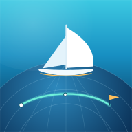

SailkickCharts, instruments and AIS, served from this boat.
Open SailkickFull app — chart, trends, weather
Open on phoneMobile view — swipeable instrument decks
Sync polars & routesCopy between this boat and the cloud
Locating the mirror…